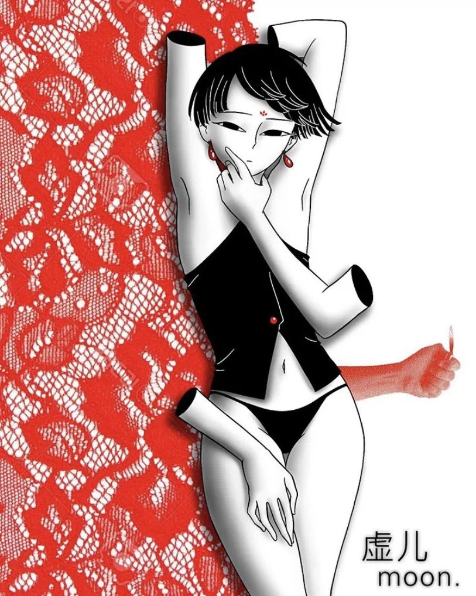

与其拥抱浪漫的理想，你必须面对每一段破碎爱情的意义 | Liu Light

欢迎来到木牙Make Unique Young Arts，让我们一起来探索让人深夜崩溃的爱情！
深夜崩溃是作为现代奋斗青年的标配。在推崇理性思考和判断的现在，感性思想受到不断的压制。感性是人类必不可少的情感，而感性的人有着丰富的情感，能体会到各种事物情感的变化。感性的人们在生活中做选择时会更加跟随自我意识，发自内心或者说从心出发。在观察事物时会更为的细腻。
Breakdown at night is the standard configuration for modern struggling youth. In the era of reasoning thinking and judgment, perceptual thoughts are constantly suppressed. Sensibility is an essential emotion for human beings, and perceptual people have rich emotions and can experience the changes in emotions of various things. Perceptual people will follow self-consciousness more when they make choices in life, from the heart. In the observation of things will be more delicate, and whether the artist is a perceptual person is uncertain. But emotional artists turn their feelings and thoughts into rational creation.
而艺术家是不是感性的人是无法确定的。但是感性的艺术家们把自己体会到的情感和思想化作理性的创作。每个感性的艺术家都有着自己独特的角度，就像是私人定制的个体情感探测器，敏锐的捕捉着每一个个体特有的情感。心思敏感，拥有多重身份，对爱情有着特别理解的Liu Light是今天来到木牙MUYA做客的感性艺术家，让我们来跟随Liu Light重拾少有的感性，理解和感受那无法被真正了解的私人情感。
Every perceptual artist has their own unique angle, just like a customized individual emotion detector, which keenly captures each individual's unique emotion. Liu light, who is sensitive in mind, has multiple identities, and has a special understanding of love, is a perceptual artist who is visiting Muya today. Let's follow Liu light's rare sensibility to understand and feel the personal feelings that can't be really understood.
刘亮
Liu Light是一名视觉艺术家、诗人和音乐家，目前居住在纽约。出生在底特律，小时候在上海生活了两年，后来在弗吉尼亚州长大，在那里Liu Light上了大学，并在DIY艺术和音乐领域工作了几年。Liu Light的作品涵盖实验插图、动画、书籍、视频、表演等等。Liu Light在zine博览会和艺术书籍博览会上展出和出售自己的作品，并在纽约、里士满和华盛顿的场馆表演音乐和诗歌。
Liu Light
Liu Light is a visual artist, poet, and musician currently based in New York. They were born in Detroit, lived in Shanghai for two years as a young child, and grew up in Virginia, where they also went to college and was involved in the DIY arts and music scene for several years. Their work spans experimental illustration, animation, books, video work, performance, and more. They have exhibited and sold their work in zine fairs and art books fairs, and performed music and poetry in venues in New York, Richmond, and DC.

Light’s work generally involves themes of selves and selfhood, subject/object, deconstruction of the body, and fantasy, dream, & multiplicities of reality. They also play with recontextualized and “remixed” elements of Chinese culture, spirituality, and mythology through a diasporic, personal lens.
Light的作品通常涉及自我和人格、主体/客体、身体的解构、幻想、梦想和现实等的多样性主题。作品还通过一种散漫的、个人的视角，对中国文化、灵性和神话进行重新语境化和重新混合元素。

➤ 木牙MUYA:在你的INS中有许多你唱歌的视频。音乐是怎样激发你的创作灵感的呢?
You have a lot of singing videos on Instagram. How music inspires your work?
Liu Light:我认为我不能像理解视觉艺术那样理解音乐。对于视觉艺术，我大致知道我在做什么，我对我的作品的主题和构成有足够的认知。我在创造一种非常具体的词汇和语言，这是由我的个人经历以及与视觉符号和意义框架的联系所决定的。但音乐是关于感觉和直觉的，它与我的诗歌和我身体和内心情感空间的关系紧密相连。(我非常喜欢音乐视频。)在某些方面，我甚至可以将音乐描述为我工作中“感觉”的部分，纯粹的情感核心，而视觉艺术才是知识结构和诗歌是脉搏。
I think music is something that I don’t understand in the same technical way that I understand visual art. With visual art, I generally know what I’m doing, I’m very intentional about the subjects and composition of my work, I’m creating a very specific vocabulary and language informed by my personal experiences and associations with visual symbols and frameworks of meaning. But with music it’s all about feeling and intuition, and it’s deeply tied to my poetry and relationship to my body and interior emotional spaces. (I love, love music videos.) In some ways I could even describe music as being the “feeling” part of my work, the purely emotional core, while visual art is the intellectual structure and poetry is the pulse.
作为一个音乐家，我主要认为自己是一个作词者和歌手/声乐家，而不是能够演奏任何乐器或制作音乐。我的音乐是诗歌的表现;我在诗歌上花了很多心思，每一次表演都是一个机会，通过身体吸收不同的语言和思想。我的身体、心情、地点和在场的人对我每一次的表演和对音乐的诠释都很重要。我更多的是将我的视觉作品融入到我的音乐和表演中。我觉得把我所有的艺术兴趣——视觉艺术，音乐，诗歌，身体——结合在一起，也许我可以创造一个只有我存在的现实，只要表演持续。如果我在这个世界上生存太难的话，我就得自己创造一个。
As a musician, I mainly consider myself a lyricist and singer/vocalist more so than being able to play any instruments or produce music. My music is a manifestation of poetry performance; I put a lot of care into what I write, and every performance is an opportunity to interpret the words and intent differently, by ingesting it through the body. I want the body, the mood, the place, the specific people who are present, to be important to each of my performances and interpretations of my music. I’ve been playing more with integrating my visual work into my music and performances too. I feel that in bringing together all of my artistic interests -- visual art, music, poetry, body -- maybe I can create a reality that I can exist in fully, just for as long as that performance lasts. If it’s too hard to exist in this world as it is, I’ll have to make my own.

➤ 木牙MUYA:看到了你已出版的漫画书 mirror in the mirror (光)，整本书从绘制，印刷到最后的装订的整个出版步骤，有哪一部分是让你觉得兴奋的？并且，你能分享给我们一些自我出版的经验吗？
In your comic book Mirror in the mirror (光), when you handle the whole process of the publication including the drawing, and binding, which part did you feel really excited about? Also, could you share with us some experience about how to self-publish? (For example, the selection of material, bookbinding methods or any else)
Liu Light:当我构思一本新书时，我通常不去想它，而是做大量的工作——画很多画，写很多不一定有目标的诗，只要当时感觉最合适就行。然后我把所有的东西都收集在一起，开始“策划”我自己的作品，并把它组织成一个主题和共同的想法。我不断地“重新策划”它，直观地感受它的底层结构，直到它感觉像一个有凝聚力的作品。这是我最喜欢的部分，它就像一个有形的自我实现的过程，通过赋予我的生活的意义，我的工作就来源于此。我不喜欢实际上印刷和装订的过程，哈哈。我试着使它尽可能的简单，同时保持书的概念和完整性。我认为自助出版很容易，只要在你的个人打印机上打印出来，然后选择一种简单的装订方法(胶水，缝纫，或者我的情况下会使用装订环)。网上也有很多打印和绑定的选择，可以帮你完成所有的工作。
So when I conceptualize a new book, I usually start by not thinking about it, and just making a lot of work -- a lot of drawings, a lot of poetry that doesn’t necessarily have a goal, just whatever feels most right in the moment. Then I collect everything together and start “curating” my own work and organizing it into themes and common ideas that I notice. And I keep “re-curating” it, intuitively feeling out its underlying structure, until it feels like a cohesive work. That’s my favorite part, it’s like a tangible process of self-actualizing by ascribing meaning to the portion of my life that that work came out of. I don’t enjoy the process of actually printing and binding it nearly as much lol, I try to make it as simple as I can while preserving the conceptual integrity of the book. I think it’s easy enough to self-publish, just printing things out on your personal printer and choosing a simple binding method (gluing, sewing, or in my case, using binder rings). There’s also a lot of online options for printing and binding that do all that work for you.
我认为思考装订的材料以及它如何与书本身的意义相互作用是很重要的。例如，在我的书，装订中使用活页夹环，不仅比钉书、粘合或缝纫更简单、更干净，我还喜欢冰冷的金属环与我的作品的柔软和复杂的本质所形成的对比。我喜欢的一点是，这种方式很结实，但仍有一种精致、易碎的特点。如果我的读者真的可以接受的话，我很喜欢这种任性的做法，让他们可以任意选择解除一部分和撤销我的书。我也认为对我来说，尽可能便宜地印刷和出版是很重要的，因为我非常重视我的作品的普及性。如果我的艺术作品对我的朋友来说太贵，买不起，或者它太珍贵又太脆，那我就没必要做了.
I think it’s important to think about the material of the binding and how it interacts with the meaning of the book itself; for example, in using binder rings for my book binding, not only was it much simpler and cleaner than stapling, gluing, or sewing, I also liked having the cold metal of the rings contrasting the soft and intricate nature of my artwork. I liked that it was mostly quite sturdy, but still had a delicate, breakable quality; I liked the perverseness of giving my reader the option to unbind and undo my book if they really wanted to. I also think it’s important for me to print and publish as cheaply as possible, because I greatly value accessibility in my work; there’s no point to me making my art if it becomes too expensive for my friends to afford, or if it’s so precious and fragile that it couldn’t take the beating of regular use. I want my work to be both beautiful and useful.
➤ 木牙MUYA: 创作绘画故事时是如何创作的呢？有结合生活中的事情作为背景吗？图像中的人物是否是自己的缩影呢？
How do you build a story for your comic book? Is there a reference to life events? Is the figure in the image a miniature of yourself?
Liu Light:我通常从自己的生活和情感经历中提炼出故事，并把它们变成幻想和梦想。我把我想表达的情感“核心”拿出来，为它创造一个其他人也可以进入的新世界。虽然我熟悉常用的讲故事技巧，但我并不像主流漫画那样真正地使用它们。我选取一些片段，把它们变成适合我自己的idea。因为我想讲的故事不属于主流故事所能涵盖的范围。实际上，我以前写的自传作品比现在多得多。我现在想，我喜欢把我的经历“赠送”给我的角色和人物，我认为他们是我的一部分，但不是真正的我。我越来越擅长创造和书写汉字;我想继续朝这个方向前进，把我的原始自我从我的作品中分离出来。我每次都把自己的全部投入到我的艺术中，但我的艺术并不是直接的“我”，我认为这是一个很重要的区别。
I usually make stories by drawing from my lived and emotional experiences and making them into fantasies and dreams; I take the emotional “core” of what I want to express and create a new world for it that others can enter into. Though I’m familiar with common storytelling techniques, I don’t really use them like mainstream comics would; I take bits and pieces and twist them to suit my own goals, because the stories I want to tell fall outside of what mainstream storytelling is able to encompass. I actually used to make much more autobiographical work than I do now. I think now, I like to “give away” my experiences to my characters and figures, who I consider to be of me, but not actually me. I’m getting better at creating and writing characters; I want to keep moving in this direction to separate my raw self from my work more. I put all of myself into my art, every time, but my art isn’t directly “me,” and I think that’s an important distinction to make.

➤ 木牙MUYA: 在你的作品中连续不断的出现了空洞，映射的是身体的空洞还是宣泄的出口？
There are many elements of holes in your works. Do these reflect the empty body parts or the outcomes of the character's emotional release?
Liu Light:我还没有完全弄明白我的洞是什么意思，但我认为它们普遍反映了一种道家的空虚感，而不是虚无，并玩弄着存在和缺失的意义。它们指的是一种不完整的感觉，一种失去重要东西的感觉，但也指的是消费和潜力。我喜欢 “洞” 带来的问题。我想知道的是，即使一个人失去了自己重要的一部分，他们还能被认为是完整的吗?它是一个什么都没有的洞，还是一个接口，一个入口?如果你掉进一个洞里，你会被吞没吗?或者你会到达一个你现在看不到的新地方吗?是谁在你身上留下了这个洞——别人，你自己，你在别人身上看到的自己?把这个洞挖出来，或者把它填进去，这两种选择都是非常痛苦的——但是如果值得呢?你觉得它值多少钱?
I haven’t entirely figured out what the meanings of my holes are yet, but I think generally they reflect a sense of Daoist emptiness, but not nothingness, and play with the meaning of presence and absence. They reference a feeling of not being complete, missing something important, but also of consumption, and potential. I like the questions that holes bring up. It’s like I want to know -- even when someone is missing a vital part of themselves, can they still be seen as complete for what they are? Is it a hole with nothing in it, or is it an interface, a portal? If you fall into a hole, will you be consumed or will you arrive at a new place that you just can’t see right now? Who put that hole in you -- someone else, yourself, the reflection of yourself that you found in someone else? Carving out the hole, or choosing to fill it in, either choice is incredibly painful -- but what if it’s worth it? What would make it worth it to you?
➤ 木牙MUYA: 我读到你的作品中有进行人物爱情的讨论，你认为爱情中最好的，最舒适的相处模式又是怎么样的呢？
There are some works related to the discussion of lover relationships. What do you think about love? Which is the best or most comfortable relationship for you in love?
Liu Light: 对我而言，爱是一种无尽的情感，哈哈哈。它既脆弱又强烈，一切都融为一体。我希望通过爱来传达自己的生活方式，如何制作艺术，如何与他人以及周围的世界相处；我非常真诚地尝试去了解爱以及爱对我的意义，因为我发现我对爱以及如何善于爱了解的越多。我就能越有目的地和能够充实地生活。自己做决定对我来说是最重要的事情。爱比我所理解的要复杂和简单得多。它温柔，残酷，有趣，迷人，似火如水，充满哲理，感性，纯正，痛苦，深刻和广阔。爱是我能够看到的光。
Love is an all-consuming emotion for me, lol, it’s both very fragile and very intense and everything in between all at once. I look to love to inform my way of life, how I make art, how I relate to others and the world around me; I try very sincerely to understand love and what loving means to me because I find that the more I understand love and how to love well, the more intentionally and fulfillingly I am able to live as myself and decide what is most important to me. Love is far more complex and simple than I can comprehend; it’s tender, it’s brutal, it’s fun and charming, fire and water, it’s philosophical, sensual, pure, painful, deep, and expansive. Love is the light through which I am able to see.
至于浪漫的爱情，我会引用邱妙津的话：“关于如何相爱：除了拥抱浪漫的理想，您还必须面对每一个破碎的爱情的含义。”我最舒适，最健康的恋爱关系是与我最亲密的朋友在一起，我非常珍惜他们。我希望在所有亲密关系中都能获得丰富的情感，在这里我们可以一起学习彼此以及新的爱情方式。我所有令人满意的关系背后都有相似的核心，它们来自于相互尊重，精神/情感平衡和深切关怀。
As far as romantic love goes, I defer to this quote by Qiu Miaojin: “On how to love well: Instead of embracing a romantic ideal, you must confront the meaning of every great love that has shattered, shard by shard.” My most comfortable and healthy love relationships are with my closest friends, whom I really cherish. I look for a depth of emotional richness in all of my close relationships, where we can learn together about each other and new ways of loving. All of my most fulfilling relationships stem from a similar core place of mutual respect, spiritual/emotional parallelism, and deep care.
➤ 木牙MUYA:现在从事着什么样的工作呢？和上学期间又有什么样的不同？（如果有工作）是如何找到现在的这份工作的呢？
Which job do you do now? How did you find this job and why did you choose to work on that? What is the difference between life in working in society and life in studying at school?
Liu Light:由于COVID，我被解雇了，目前我正在竭尽所能。以前，我在一家非营利组织的市场营销部门工作，我是通过与艺术相关的工作委员会找到的。自毕业以来，我实际上一直在努力寻找并保持出色的工作，并且做过许多随机演出但效果不佳导致最终无法长期维持下去。我感到不满，因为我不得不表现的（通常是表里不一）很正常以维持工作。而我感到愤慨的是不得不放弃自己的大量时间和精力。直到最近几年，我才知道如何在追求艺术兴趣和工作场所需求之间取得平衡。我发现通常有两个最适合我的选择：市场营销，设计和媒体工作，在能进步的组织中的工作。在这里我至少可以与优秀的人一起工作，并可以在个人工作中练习设计技能，也可以就自由职业者的身份从事完全独立的工作。两种选择都有其优点和取舍。不过，理想情况下，我希望可以纯粹依靠自己的艺术谋生。我认为这对许多艺术家来说都是最好的选择，我并不认为这有什么问题。我还认为，重要的是要用一切可能的方式进行斗争，并迈向一个不只是一厢情愿的世界；我必须相信那是可行的。
I was laid off due to COVID and am currently freelancing where I can. Previously, I was working in Marketing for a nonprofit, which I found through an arts-related job board. I have actually struggled a lot with finding and keeping a good job since graduating, and have worked a number of random gigs that didn’t work out very well or ended up being something I couldn’t sustain long-term. I resented feeling like I had to act out a (usually closeted) “persona” in order to keep a job, and I resented having to give up so much of my time and energy. I didn’t know how to balance my need to pursue my artistic interests with the demands of the workplace until the last couple years. I’ve found that there are generally two options that work best for me: marketing, design, and media jobs at more progressive organizations where I can at least work with nice people and get to practice design skills that I can use in my personal work, or doing fully independent work as a freelancer. Both options have their benefits and trade-offs. Ideally, though, I could make a living purely from my art. I think this must be true for many artists and I don’t think it’s wrong to wish for that. I also think it’s important to fight in whatever ways you can to move toward a world where that isn’t just wishful thinking; I have to believe that that’s possible.
我认为，如果您有幸不用上班只专心读书（那是我以前的事情！），那么您会天真地对自己负责任，并且可以避免失败带来的后果。上学，特别是作为一个“特权”学生，去上学往往是一种与现实世界隔绝的经历。您更有机会专注于“纯知识性”主题。现实世界中存在着更多的风险，并且系统运作的方式有许多复杂的原因，它们会直接影响你的生活质量，而且没人会告诉你或者为你做好准备。当你必须工作以求生存时，很容易忘记自己的身份和真正想要的东西。以及当你精疲力竭地度过每一天，一个星期，甚至一个月时，都想着如何在身体，情感和精神上照顾自己。如果您是黑人/土著人/有色人种，酷儿/跨性别，残障，神经发散，低收入，无证件等等，则所有这些因素都会导致问题复杂化。
I think if you are lucky enough to go to school without having to work (which I was!), you get to be more naive to the reality of being responsible for yourself, and you’re buffered from the consequences of failure. Going to school, especially as a privileged student, tends to be an experience isolated from the reality of the working world. You’re more able to focus on “purely intellectual” subjects. There’s more at stake in the real world and there’s many complex reasons for the way the system works, which can intimately affect your quality of life and which no one tells you about or prepares you for. When you have to work to survive, it’s easy to lose sight of who you are, what you really want, and how to take care of yourself physically, emotionally, and spiritually when you’re exhausted from just trying to make it through another day, week, month, all of which is compounded if you are Black/Indigenous/person of color, queer/trans, disabled, neurodivergent, low-income, undocumented, and so on.
➤ 木牙MUYA:CATNAP friends 的形象非常深入人心，可以聊聊是怎么想到这样一个玩偶形象的呢？
The CATNAP Friends image is very impressive. Can you talk about how you came up with this doll image?
Liu Light:谢谢！我以前喜欢画许多奇奇怪怪的东西，形状和不同品种的猫，而异形猫的特别使我脱颖而出。他既简单，可爱，又带着一种吸引又迷人的搞怪。他是一个非常有表现力的形象，是以一种微妙的方式。我画了很多以异形猫和他的朋友为特色的恶搞漫画，并展示了异形猫的抽象力量。我与我最亲密的朋友之一Kotone Deguchi合作，使他成为了一只长毛绒猫。Kotone Deguchi应该获得所有的表扬，是他们让异形猫变成了实体玩具，他们接受了我的设计并为异形猫设计了定制图案，我选择了一些面料，然后以大异形猫的形式和小钥匙扣形式缝制了整堆异形猫。 然后，我创建了一些有趣的图形来宣传这些异形猫，并在COVID之前的工艺品展和漫展上将其出售，现在又在线上销售，然后我们将所生产的产品进行拆分。 Kotone和我组成了一支非常出色的团队。<3
Thank you! I used to enjoy drawing many weird forms and shapes and varieties of cats, and the alien cat character was the one that stood out to me as something simple, cute, and also kind of weird in a charming way that people are attracted to. He’s a very expressive character but in a subtle way, and I drew all these silly comics that feature him and his friends and show off his abstract powers. I collaborated with one of my closest friends, Kotone Deguchi, to make him into a plush. They deserve all the credit for actually making him into a doll -- they took my design and drafted a custom pattern for the plush, I chose some fabrics and they sewed a whole bunch of the plushes in a big plush form and a small keychain form. I then created some fun graphics to promote the plushes and sold them at craft and zine fairs pre-COVID, and now online, and we split whatever we make. Kotone and I make a really great team. <3
➤ 木牙MUYA:把想法化作实践落地是令人兴奋的事情，CATNAP friends 从图纸到玩偶到售卖，具体花费多长时间又经历了哪些步骤呢？是否是手工制作，如果不是又是如何联系到厂家的呢？
It’s exciting to put an idea into practice. CATNAP Friends goes from drawing to dolls to selling. How long does it take? Is it handmade, and if not, how do you contact the manufacturer?
Liu Light:我认为通常需要几个星期的时间，尤其是如果你正在与其他人合作制作产品，并且是在需要反复询问最终产品外观的情况下。我的CATNAP们都是Kotone手工制作的。所以除非你们已经知道，否则我也不知道该如何与制造业一起使用和联系。我知道有些人在中国制造定制珠宝，因此我想对于长毛绒和玩偶来说可能会有类似的东西。包括衬衫，艺术品和贴纸之类的印刷商品。你通常可以去找找当地的印刷商店，或者上网获取带有艺术品的印刷品。
I think it will usually take a few weeks, especially if you’re working with someone else to make them and you have to go back and forth about how you want the final product to be. My CATNAP friends were all handmade by Kotone, so I don’t know how it works with manufacturing unless you already have a connection. I know that some people can get custom jewelry manufactured in China, so I imagine there could be something similar for plushes and dolls. For printed merchandise such as shirts, art prints, and stickers, you can often find local print shops or go online to get things printed with your artwork on it.

木牙微信订阅号